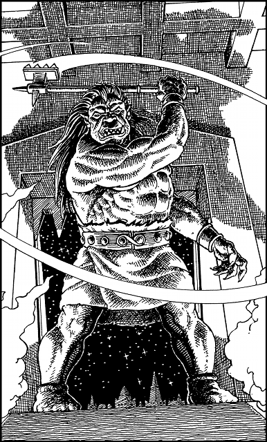

223
You run along a wide, low-ceilinged tunnel that is strewn with the corpses of Vorka, all of whom perished the moment you destroyed the rune which empowered their existence. The tunnel enters an armoury where furnaces now blaze unattended, and ends at a ramp that ascends to an open gate. Through this gate you glimpse the starry night sky and the rooftops of Duadon’s East Quarter. This is a welcome sight for it holds the promise of escape from Skull-Tor. As you reach the ramp you increase your pace and run swiftly towards the gate but, as you are nearing the top, your path is blocked by a hulking, blue-skinned giant. At once you recognize this creature to be an Ogron, a notoriously dull-witted breed but one much suited to hard labour. The Ogron who faces you now is an armourer and he is carrying a heavy double-handed warhammer. You order him to let you pass, but your command is angrily countermanded by Vandyan’s guards who have entered the tunnel behind you. They order the Ogron to attack you, and readily he raises his great warhammer and takes a swipe at your head.

Ogron (with Warhammer): COMBAT SKILL 42 ENDURANCE 42
If you win this combat, turn to 132.